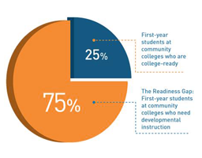

Health & Disability
Millions of americans face serious obstacles to steady work.
These individuals often become enmeshed in costly public assistance and enforcement systems, and, just as important, many find themselves living in poverty, outside the mainstream in a society that prizes work and self-sufficiency.
Highlights
ISSUE FOCUS AREAS
Creating Better Programs for Disconnected Youth
Our current portfolio of projects focuses on programs for high school dropouts, youth with disabilities, and youth aging out of child welfare, among other groups.
Research
DATA POINT
How can we Help Ex-Prisoners Reenter the Labor Market?
REPORT
Providing Earnings Supplements to Encourage and Sustain Employment Lessons from Research and Practice?
Many formal evaluations of earnings supplement initiatives, using random assignment designs, have been completed by MDRC.
Report